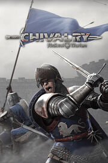

Chivalry: Medieval Warfare
Chivalry: Medieval Warfare
Detalles
|  | |
| Tiempo de juego | 2h 59m 0s |
| Última actividad | 19/4/2020 10:23:26 |
| Añadido | 16/3/2022 22:03:23 |
| Modificado | 17/3/2022 17:31:19 |
| Estado de finalización | Jugado |
| Librería | Steam |
| Fuente | Steam |
| Plataforma | PC (Windows) |
| Fecha de lanzamiento | 16/10/2012 |
| Puntuación de la Comunidad | 81 |
| Puntuación de la Crítica | 79 |
| Puntuación de usuario | |
| Género | Action Indie |
| Desarrollador | Torn Banner Studios |
| Editor | Torn Banner Studios |
| Característica | Achievements Full Controller Support Includes Level Editor Multiplayer Remote Play On TV Trading Cards Valve Anti-Cheat Enabled Workshop |
| Enlaces | Punto de encuentro Discusiones Guías Noticias Página de la tienda PCGamingWiki Logros Workshop |
| Tag | |
Descripción
Besiege castles and raid villages in Chivalry: Medieval Warfare is a first-person slasher with a focus on multi-player. Featuring competitive online combat that seeks to capture the experience of truly being on a medieval battlefield. Inspired from the intensity and epicness of swordfighting movies such as 300, Gladiator and Braveheart, Chivalry: Medieval Warfare aims to bring that experience to the hands of a gamer.
The game is skill-based and controls like an FPS, but instead of guns and grenades, players are given swords, shields, maces, battleaxes and longbows. Set in a fictional, yet gritty and realistic world, players will fight in fast paced online battles besieging castles, raiding medieval villages and fighting for glory in the arena with up to 32 players.
The game is skill-based and controls like an FPS, but instead of guns and grenades, players are given swords, shields, maces, battleaxes and longbows. Set in a fictional, yet gritty and realistic world, players will fight in fast paced online battles besieging castles, raiding medieval villages and fighting for glory in the arena with up to 32 players.
Key Features:
- Deep melee combat system provides players with a huge range of responsive combat options
- Adjust your attacks and blocks in real time with the mouse for precise and full control of the action
- Wield an arsenal of up to 60 brutal weapons ranging from broad swords and battle axes to longbows and javelins
- Dynamic objective system brings team tactics and strategy to the forefront as players batter down gates, raid villages and assassinate enemy royalty to achieve victory.
- Use a variety of siege weapons ranging from catapults, boiling oil, ballista, battering rams and more
- Vast, lush environments that transport the player to a gritty and immersive medieval world.
- Offline play options that allow players to gain familiarity with the controls and gameplay before being thrust into the action.